Do registro ao diagnóstico: formulários, filtros e análises para apoiar decisões em uma aplicação local.
PORTFÓLIO PESSOAL
NICHOLAS
BIROCHI.
Dados, código
& curiosidade.
automações e aplicações. Explore meu trabalho
SÃO BERNARDO DO CAMPO, BRENGENHARIA DA COMPUTAÇÃO
ANÁLISE DE DADOS+DESENVOLVIMENTO+AUTOMAÇÃO & IA+HARDWARE
01 / TRABALHOS SELECIONADOS
Do insight ao protótipo.IDEIAS QUE
GANHAM FORMA.
Uma seleção do que venho construindo entre dados, software e experimentação.
Todos no GitHub 18 projetos visíveis
18 projetos visíveis
Painéis de presença, co-presença e evolução semanal com filtros, cache e exportação de relatórios.
VOICE DEMOOlá, Nicholas. Sistemas locais ativos.O vídeo diz: Olá, Nicholas. Sistemas locais ativos. Posso organizar tarefas, consultar informações e trabalhar com inteligência artificial sem enviar seus dados para a nuvem.
Assistente multimodal local com voz, memória profissional estruturada e automações supervisionadas.
Uma chave biométrica para macOS: eletrônica, protocolo, firmware e gabinete paramétrico em um só produto.
Loja completa com catálogo, carrinho, pedidos, autenticação, perfis de acesso e painel administrativo.
Um pipeline auto-hospedado para transformar documentos em análises e respostas com IA local.
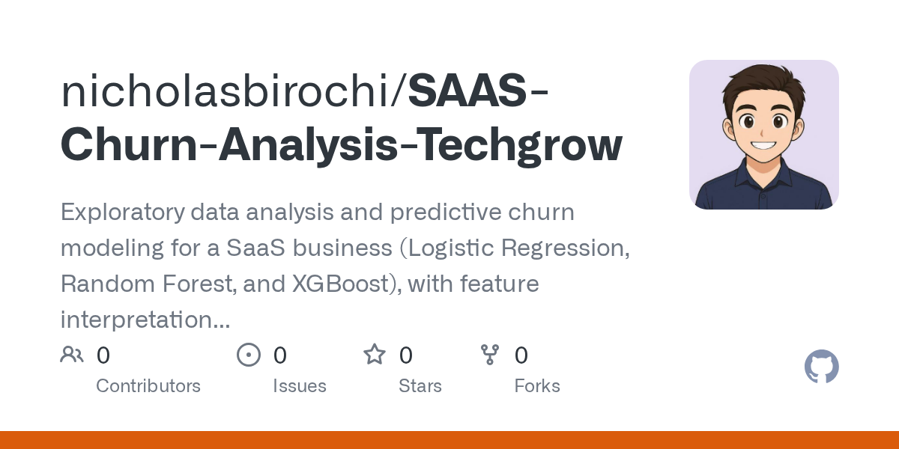
Modelagem preditiva de cancelamento (Logistic Regression, Random Forest e XGBoost) com interpretação de variáveis e recomendações para Produto e CS.
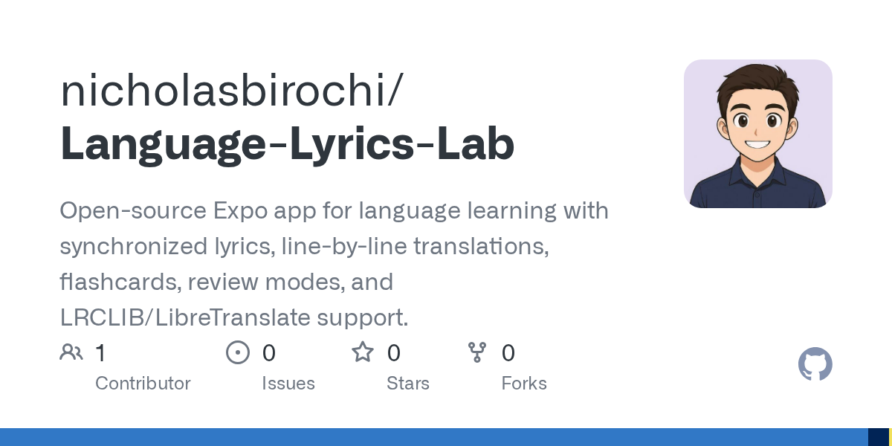
App de idiomas com letras sincronizadas, tradução linha a linha, flashcards e modos de revisão, usando LRCLIB e LibreTranslate.
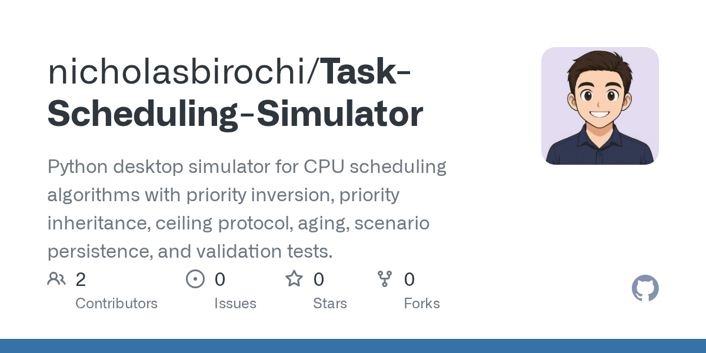
Simulador de algoritmos de escalonamento de CPU com inversão e herança de prioridade, protocolo de teto, aging, cenários persistentes e testes.
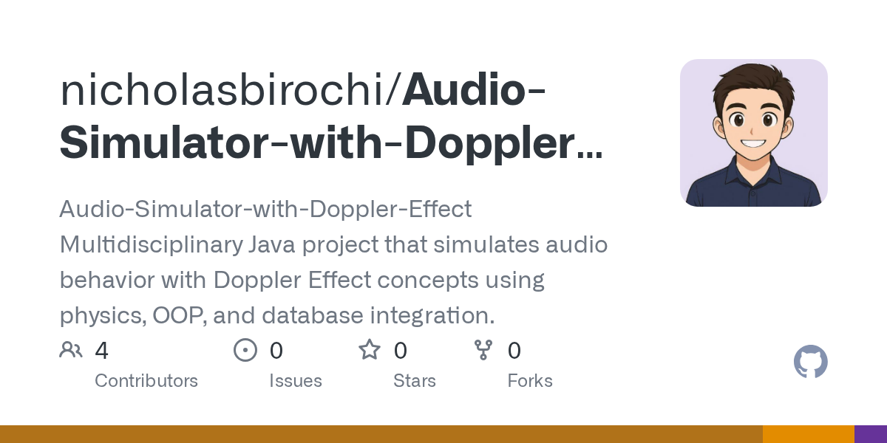
Projeto multidisciplinar em Java que simula o comportamento do áudio com o efeito Doppler, unindo física, orientação a objetos e banco de dados.
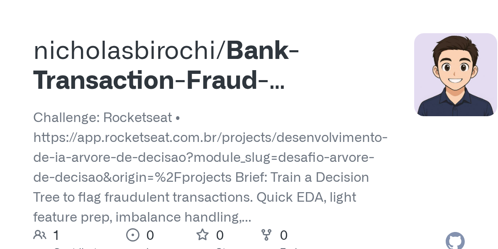
Árvore de decisão para sinalizar transações fraudulentas: EDA, preparo de atributos, tratamento de desbalanceamento e avaliação por ROC-AUC e PR-AUC.
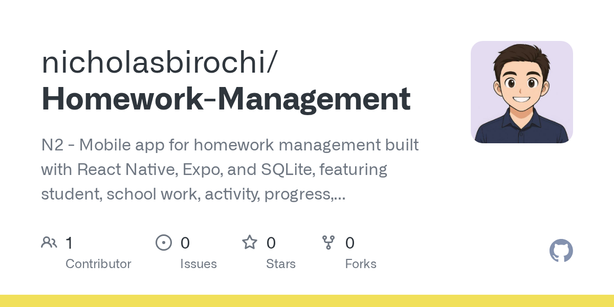
App mobile para organizar a vida escolar: alunos, trabalhos, atividades, progresso e gráficos, feito com React Native, Expo e SQLite.
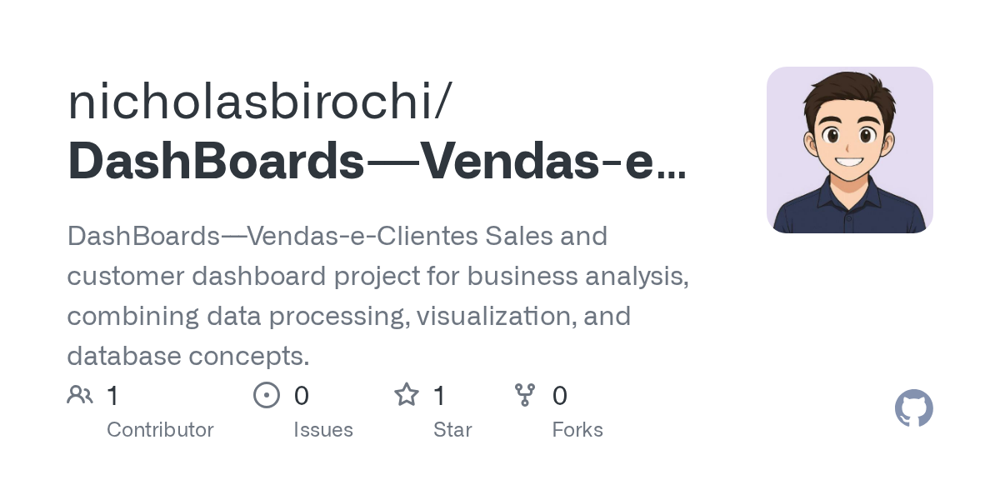
Dashboards de vendas e clientes para análise de negócio, unindo processamento de dados, visualização e conceitos de banco de dados.
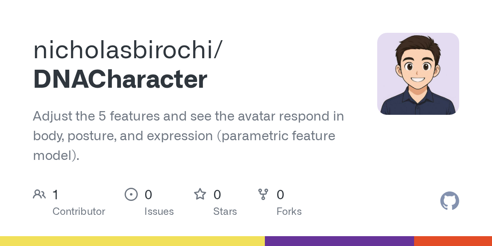
App web paramétrico: ajuste cinco características e veja o avatar responder em corpo, postura e expressão.
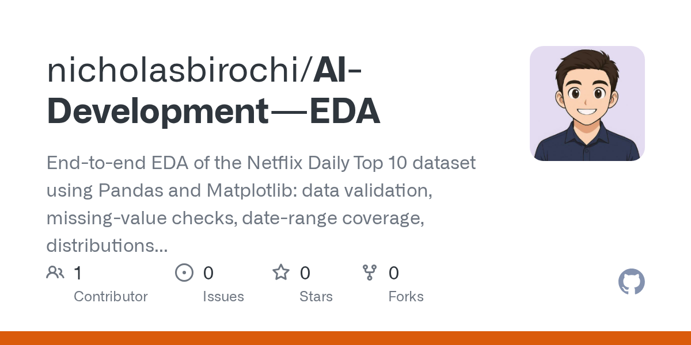
Análise exploratória do Netflix Daily Top 10 com Pandas e Matplotlib: validação, distribuições, cobertura temporal e títulos de maior audiência.
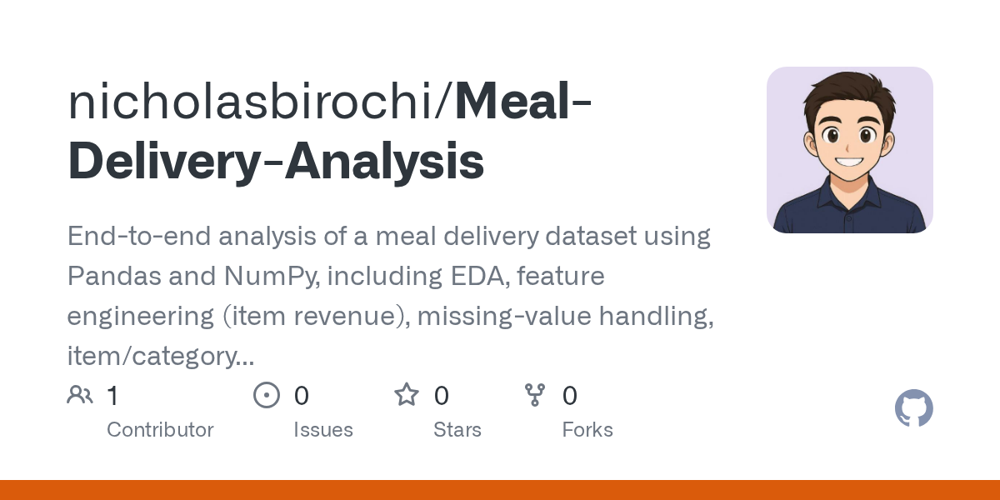
Análise de dados de delivery com Pandas e NumPy: EDA, engenharia de atributos, tendência mensal de receita e principais KPIs de negócio.
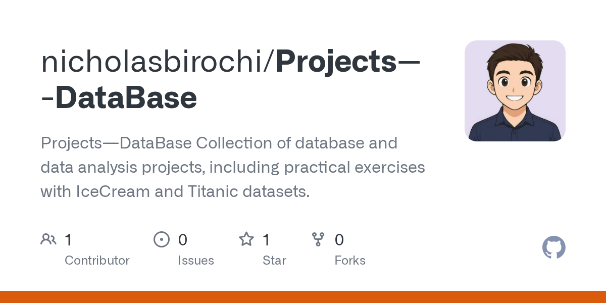
Coleção de projetos de banco de dados e análise de dados, com exercícios práticos usando os conjuntos IceCream e Titanic.
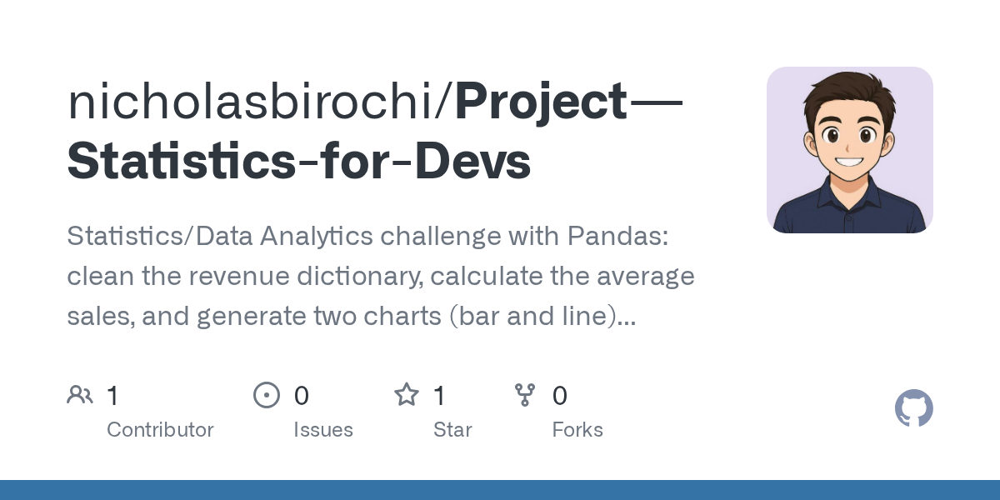
Desafio de estatística e análise com Pandas: limpeza de dados, cálculo de médias e geração de gráficos de barra e linha por mês com Matplotlib.
28repositórios públicos
4áreas de atuação
B2inglês certificado
2027conclusão da graduação
02 / UM POUCO SOBRE MIM
Além do código.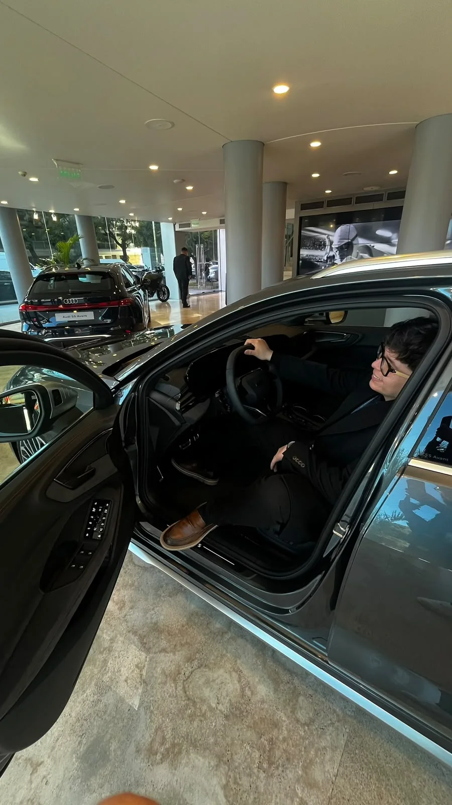
CURIOSO POR
NATUREZA.
INOVADOR
POR ESCOLHA.
Sou Nicholas Birochi, tenho {{age}} anos e sou estudante de Engenharia da Computação na Faculdade Engenheiro Salvador Arena. Também atuo como estagiário em Análise de Dados na Volkswagen do Brasil.
Meu trabalho conecta dados e desenvolvimento: investigar um problema, encontrar padrões e criar soluções que ajudem alguém a decidir ou a trabalhar melhor.
Essa curiosidade também vai para os projetos pessoais. Exploro IA local, aplicações web, música e hardware, aprendendo enquanto transformo ideias em experiências úteis.
Mais sobre mim no LinkedIn01
Dados & análise
Python, R, SQL, Power BI,
Pandas e Machine Learning
02
Software
Flask, Dash, Java, Spring,
C#, React Native e Git
03
Automação & IA
Ollama, n8n, Docker,
Power Automate e Excel VBA
04
Experimentação
ESP32, USB HID, sensores,
firmware e modelagem 3D
03 / TRAJETÓRIA
Aprendizado e prática em movimento.DOIS CAMINHOS.
UMA EVOLUÇÃO.
Formação e experiência avançam juntas: o que aprendo ganha aplicação, e cada desafio profissional orienta o próximo estudo.
01Aprendizado
PREVISTO
Conclusão da graduação
Formação em Engenharia da Computação prevista para dezembro de 2027.
IDIOMA
Cambridge English B2
Certificação Cambridge B2 First concluída com score 153.
02Profissional
OBJETIVO
Próximo passo: Analista de Dados Júnior
A progressão desejada após o estágio, reunindo experiência prática, formação e autonomia técnica.
VOLKSWAGEN DO BRASIL ATUAL
Estagiário em Análise de Dados
Dashboards em Python e Power BI, análises de dados do SAP e IA local para apoiar a Auditoria Especial.
PRATIKAUD
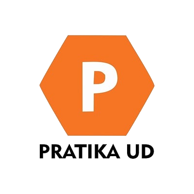
Estagiário em Análise de Dados
Automação de planilhas, análise de dados e melhoria de relatórios internos com Excel e VBA.
INDICAÇÕES PROFISSIONAIS
Perspectivas de quem confia no meu trabalho.Nicholas é um profissional ímpar. Comprometido e responsável. Além disso é inovador, agregando muito aos processos em nossa área e na qualidade das atividades que entrega.
Carlos Alberto Azarias
Indicação via LinkedIn
Recomendo o Nicholas pela dedicação e disposição para ouvir as necessidades da área, com as quais contribui a partir de ideias e soluções disruptivas, que demonstram seu pensamento orientado pelas tecnologias do futuro.
Eduardo Folli
Indicação via LinkedIn
Acompanhei o Nicholas no desenvolvimento do projeto para igreja (CCB-BI). Ele soube ouvir, evoluir a solução e transformar uma necessidade real em uma ferramenta clara, útil e bem construída.
Vitor Tadeu Lousada
Indicação via LinkedIn
Amigo meu de longa data, sempre disposto a correr atrás e entregar o produto.
Edgar C. S. Ribeiro
Indicação via LinkedIn
Página 1 de 2
04 / CONTATO
UMA CONVERSA PODE SER O COMEÇO.VAMOS
CONVERSAR?
Estou aberto a oportunidades, colaborações e projetos em dados, automação, IA local e desenvolvimento de software.